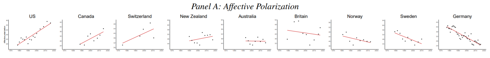

Do Referenda Reduce Polarization?
In his nice overview of Switzerland’s political system, Martin Sustrik writes:
“In short, legislative referenda are probably the single most important force that driving [sic] Switzerland away from the political polarization and towards the rule by consensus.”
This claim strikes me as odd for two reasons.
If adding veto points reduced polarization by forcing compromise, then one would expect the United States — a system riddled with veto players, referenda, and multiple levels of government — to be much less polarized than it is. And Western European parliamentary systems to be much more polarized than they are. As best as I can tell, there is no such empirical relationship.
The premise itself — that Switzerland has been driven away from political polarization — just doesn’t seem to be true. As Boxell, Gentzkow, and Shapiro (2020) show, affective polarization in Switzerland is roughly at the same level as the United States, and has been trending upward since the 1970s. Compare that with other Western European countries, where affective polarization is, by their measure, declining.

There are many things to admire in the Swiss political system, but being uniquely depolarizing does not seem to be one of them.
One important trend in Swiss politics has been the rise of the right-wing populist Swiss People’s Party (SVP), which doubled its representation in the federal legislature over the past 30 years. No doubt this has played a role in increasing affective polarization, a measure of how people feel about members of other parties.
Actually, one of my favorite features of the Swiss political system is the federal executive branch, which is not headed by a single president or prime minister, but by a seven-member Federal Council. And control of the Federal Council is assigned proportionally! No easy feat for a body with seven members, so since the 1950s seats on the council have been allocated by an unofficial “Magic Formula”. The Liberal party always gets two seats, the Social Democrats always get two seats, and so forth, so that membership is roughly divided according to party vote share.
The fact that the “prize” of the federal executive is basically never up for grabs seems like a deeply salient fact. A Swiss citizen may despise the SVP, but the fact that they are not a hair’s breadth from wielding complete control of the executive branch might make politics feel a bit less apocalyptic.